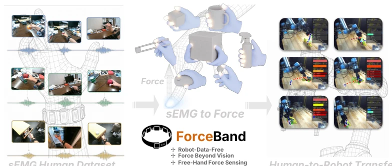
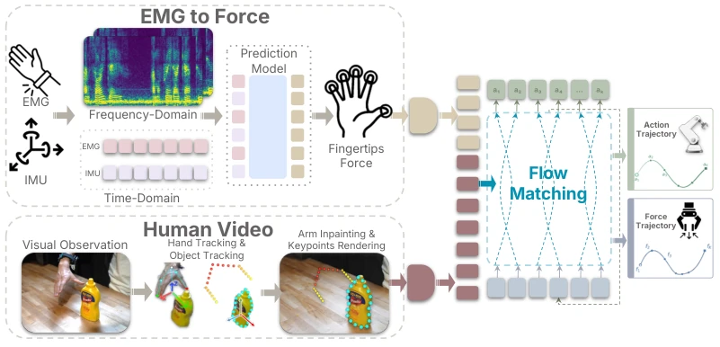
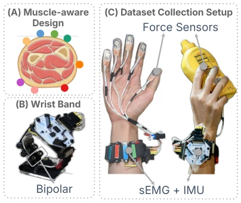
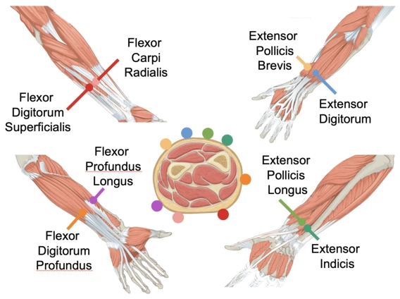
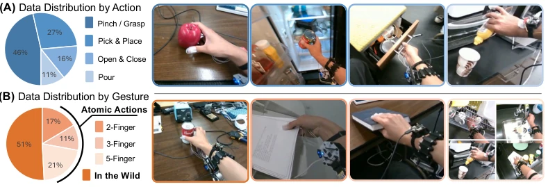
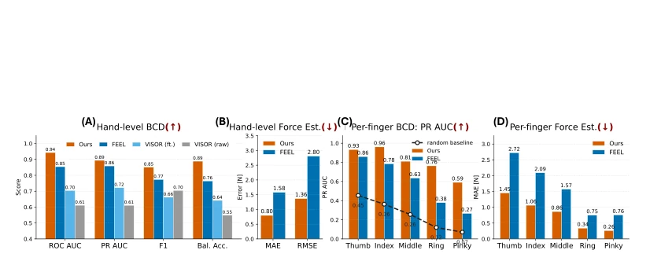
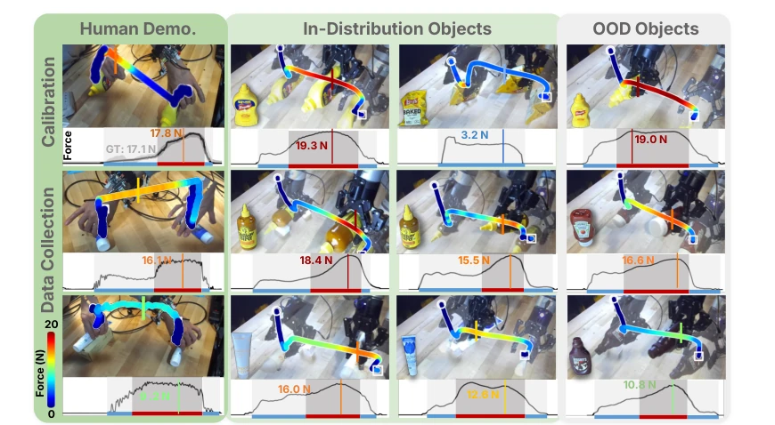
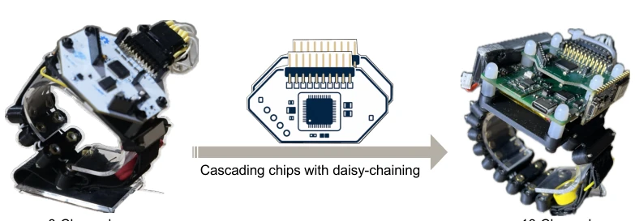
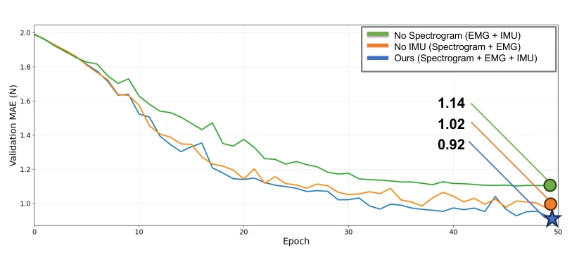
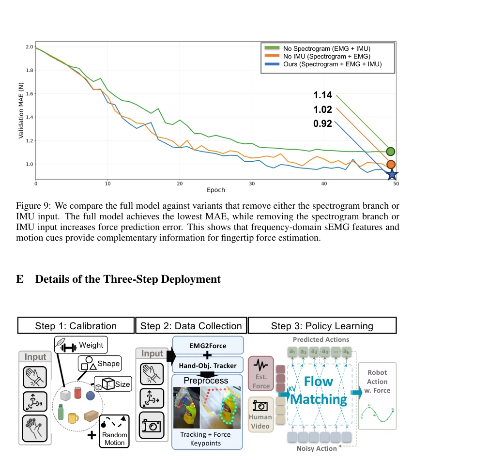

This paper finally incorporates the "force" invisible dimension into human demonstration data. Previously, learning robot manipulation relied either on vision guessing (blind guessing) or wearing gloves (cumbersome). ForceBand uses a cheap wristband to measure muscle electrical signals to infer fingertip force, a rather bold approach. Although claimed to be "sensorless", the calibration phase still relies on actual force sensors, which is somewhat contradictory. However, the experimental results are indeed robust, with errors reduced by half compared to the pure vision baseline, allowing robots to perform more diverse manipulations. However, cross-user generalization still requires calibration, falling short of true "plug-and-play", but as a low-cost solution for haptic learning, it is indeed a good stepping stone. It demonstrates that sEMG can serve as a powerful supplement to vision, especially in occlusion scenarios. However, if the force sensor used for calibration can be removed in the future, it would be truly perfect. Currently, this counts as a "tangible" progress in embodied intelligence, although it has not yet completely broken free from the constraints of "touch".
Robot learning benefits greatly from human demonstrations, but existing data sources mostly record motion trajectories or appearance, missing the key information of contact force [1, 2, 3, 4, 5, 6]. Existing methods for acquiring contact force each have shortcomings: vision-based methods, although non-invasive, have highly ambiguous inference of force under occlusion or blur [8, 9, 10, 11, 12, 13]; direct force sensing such as tactile gloves is reliable, but it occludes visual cues and is cumbersome for large-scale collection [14, 15]. sEMG can serve as a proxy for muscle activation, but raw signals are noisy and vary from person to person [17, 18, 19]. Therefore, this paper aims to solve how to acquire haptic information from natural human operations in a low-cost and reproducible manner without wearing fingertip sensors, to support force-sensitive robot manipulation.

Figure 1: ForceBand learns force-aware robot policies from human demonstrations with wrist sEMG. A human performs natural manipulation while wearing a muscle-aware surface electromyography (sEMG) wrist- band (left). The EMG2Force model converts muscle signals into per-finger force traces (middle), which are synchronized with human video to create force-enriched demonstrations. These demonstrations are retargeted to robot embodiments and used to train a force-aware policy that predicts both action and force trajectories for downstream manipulation (right).
The overall process is divided into three stages: hardware acquisition, force prediction model training, and policy learning. First, a muscle-perceived sEMG wristband is designed, adopting an anatomy-guided electrode layout (8 channels) combined with IMU, balancing cost and accuracy. Second, the EMG2Force model is constructed, inputting sEMG time series and IMU data, generating spectrograms through Short-Time Fourier Transform (STFT), combined with DINOv3 encoder and Transformer decoder, to predict five-finger fingertip force trajectories. This step utilizes frequency domain features to supplement time domain information, improving noise resistance. Finally, human video and estimated force trajectories are redirected to the robot embodiment to train the Flow Matching policy. The policy not only predicts actions but also takes force as an additional channel for input and output, enabling the robot to learn the closed-loop relationship between contact states and future force commands, achieving haptic-enhanced manipulation. Additionally, the system supports modular expansion, capable of cascading more channels to adapt to more complex task requirements.

Figure 2: ForceBand system architecture. Our method predicts per-finger force traces from wrist sEMG and IMU signals by combining time domain and frequency domain representations. In par- allel, human videos are transformed into robot-compatible observations. A flow matching policy is then trained to predict both action and force trajectories for forceful robot manipulation.

Figure 3: Hardware design of ForceBand. Our method combines anatomically guided wrist sEMG sensing with an IMU to capture muscle and motion signals relevant to finger-level force. Fingertip force sensors are used during dataset collection and calibration to provide ground-truth force supervision, and are removed during target- task demonstration collection.

Figure 7: Electrode placement details. We use eight sEMG channels: seven to capture muscle activity associated with fingertip control and one to capture wrist flexion (Figure A). Channel 1 is placed over the extensor pollicis brevis (EPB) for thumb metacarpophalangeal (MCP) extension; Channel 2 over the extensor digitorum (ED) for MCP extension of the index, middle, ring, and little fingers; Channel 3 over the extensor pollicis longus (EPL) for thumb interphalangeal (IP) extension; Channel 4 over the extensor indicis for index-finger extension; Channel 5 over the flexor digitorum profundus (FDP) for flexion at the distal interphalangeal (DIP) joints of the index, middle, ring, and little fingers; Channel 6 over the flexor digitorum superficialis (FDS) for flexion at the proximal interphala
Evaluated on a 10-hour multimodal dataset. In terms of force estimation, the muscle-perceived layout reduced errors by 18% compared to the uniform layout, and EMG2Force reduced errors by over 50% compared to vision baselines (e.g., VISOR-HOS, FEEL), with obvious advantages especially in occluded fingers. Policy learning was tested on a UR-5 robot; compared to binary/continuous gripper baselines, ForceBand achieved an 87% success rate in grasping, squeezing, and placing tasks across 9 different objects (including OOD). Ablation studies show that the spectral branch and IMU input both significantly reduce prediction errors. Although calibration still requires a force sensor, it demonstrates that sEMG can serve as an effective force supervision signal.

Figure 4: Dataset statistics. A dataset of synchronized egocentric video, sEMG, IMU, and per- finger force. (A) Action distribution and (B) gesture distribution, spanning atomic grasps and in- the-wild interactions with varied object shape, weight, and size.

Figure 5: Quantitative force estimation results.

Figure 6: Force-aware robot policy rollouts. ForceBand predicts object-specific force for pick, squeeze, and place tasks across objects with grasp widths from 1 to 72 mm, including both ID and OOD objects. In each force plot, different background colors indicate different task stages: pick, squeeze, and place. Across objects, the policy produces distinct peak forces from 3.2 N to 19.3 N, enabling squeeze behaviors that baselines fail to reproduce. apply an object-specific force profile that human evaluators can distinguish from the forces used for picking and placing, indicating a purposeful squeeze rather than a fixed grasp command. The task cannot be solved by kinematics alone: insufficient force causes slipping or incomplete squeezing, while excessive force can deform the object, destab
其他图片Other Figures

Figure 8: Hardware extensibility through daisy chaining. The 8-channel acquisition config- uration used in this work can be extended by cascading a second acquisition module through a daisy-chain interface, forming a 16-channel configuration. This modular design supports denser and task-specific electrode layouts without redesigning the overall wearable platform.

Figure 9: We compare the full model against variants that remove either the spectrogram branch or IMU input. The full model achieves the lowest MAE, while removing the spectrogram branch or IMU input increases force prediction error. This shows that frequency-domain sEMG features and motion cues provide complementary information for fingertip force estimation.

Figure 10: Details about the three-step deployment.